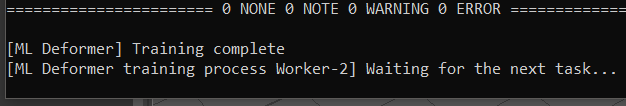
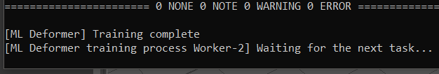

重要： 在您训练 ML 变形器时，系统可能会提示您下载并安装外部 Python 模块。默认情况下，附加模块的安装路径为 <MAYA_APP_DIR>/mlDeformer/<ml_deformer_version>/Lib/site-packages。如果需要手动下载这些模块和/或将其安装到自定义位置，请参见安装 Python 库以训练 ML 变形器。
本主题提供了另一个示例，说明 ML 变形器如何模拟一个变形对象在另一个对象上的变形动画。您还可以使用变形器属性构件（变形器堆栈）创建 ML 变形器，如果已设置绑定，则该工具非常有用，因为它可避免传输变形目标网格的工作。请参见创建 ML 变形器。
为了说明这个过程，此场景有两个网格，一个是静态网格（磁盘 1），另一个是具有簇变形器的网格（磁盘 2）。我们将使用磁盘 2 中的动画对 ML 变形器进行训练，以便可以在磁盘 1 上使用它。磁盘 2 是目标变形，即 ML 变形器模拟的目标。
磁盘 1 是静态网格，磁盘 2 具有簇变形器。
提示： 可以在内容浏览器中测试和试验 ML 变形器示例文件（“窗口 > 内容浏览器 > 示例 > 动画 > ML 变形器”(Windows > Content Browser > Examples > Animation > ML Deformer)）。


在内容浏览器中对 ML 变形器动画进行采样
将 ML 变形器添加到几何体
- 选择要接收变形的对象。在本示例中为磁盘 1。
- 在“动画”(Animation)(F4)、“绑定”(Rigging)(F3) 或“建模”(Modeling)(F2) 菜单集中选择“变形 > ML 变形器”(Deform > ML Deformer)，以将 ML 变形器添加到磁盘 1。
- 打开“属性编辑器”(Attribute Editor)中的“ML 变形器”(ML Deformer)选项卡，然后固定选项卡。
- 选择具有变形的几何体（磁盘 2），然后在“属性编辑器”(Attribute Editor)中，在“ML 变形器”(ML Deformer)表中的“目标几何体”(Target Geometry)列上单击鼠标右键，然后选择“将目标替换为选定项”(Replace Target with Selected)。
- 切换到“属性编辑器”(Attribute Editor)的“控件收集器”(Control Collector)选项卡，然后展开“添加控件”(Add Controls)表。
- 选择“磁盘 2”(Disk 2)（目标），然后在“属性编辑器”(Attribute Editor)的“添加控件”(Add Controls)列表的“标量”(Scalars)选项卡中选择要控制变形的属性。（“矩阵”(Matrices)选项卡用于拥有较深关节层级的情况。请参见 ML 变形器控件收集器属性主题中的“矩阵”(Matrices)选项卡部分。）
按住 Ctrl 或 Shift 键并单击以选择多个或所有属性，然后单击列表右上角的“添加”(Add) (
 ) 按钮。在此示例中，由于动画仅位于 Y 轴上，因此我们仅选择“translateY”属性。
注： 您也可以单击鼠标右键，然后选择“添加选定对象”(Add Selected)或“全部添加”(Add All)。
) 按钮。在此示例中，由于动画仅位于 Y 轴上，因此我们仅选择“translateY”属性。
注： 您也可以单击鼠标右键，然后选择“添加选定对象”(Add Selected)或“全部添加”(Add All)。这些属性将添加到“添加控件”(Add Controls)列表下方的“连接的控件”(Connected Controls)列表中。
- 设置变形训练的“最小值”(Min)和“最大值”(Max)。在此示例中，“最小值”(Min)和“最大值”(Max)的值分别设置为 -50 和 50，因为在本示例中，这能很好地表示我们要模拟的动画。
提示： 您可能需要展开“属性编辑器”(Attribute Editor)窗口，才能查看“最小值”(Min)和“最大值”(Max)列。
- 选择目标几何体（磁盘 2）。在“属性编辑器”(Attribute Editor)的“ML 变形器”(ML Deformer)选项卡中，单击“导出训练数据...”(Export Training Data...)
 以打开“导出训练数据”(Export Training Data)窗口，在该窗口中可以配置目标几何体中用于 ML 变形器的动画。（您也可以在“ML 模型”(ML Model)列上单击鼠标右键，然后从 ML 变形器属性主题的“ML 模型”(ML Model)上下文菜单中选择“导出训练数据...”(Export Training Data...)。）
以打开“导出训练数据”(Export Training Data)窗口，在该窗口中可以配置目标几何体中用于 ML 变形器的动画。（您也可以在“ML 模型”(ML Model)列上单击鼠标右键，然后从 ML 变形器属性主题的“ML 模型”(ML Model)上下文菜单中选择“导出训练数据...”(Export Training Data...)。）
- 在“导出训练数据”(Export Training Data)窗口中，设置以下参数：
- 训练数据位置(Training Data Location)：浏览到要保存训练数据的位置并为其创建文件夹。
- 导出开始帧(Export Start Frame)/导出结束帧(Export End Frame)：设置要从目标几何体变形捕获的帧范围。
- 训练数据名称(Training Data Name)：选择数据的名称。
- 单击“导出”(Export)。目标对象（磁盘 2）动画将导出为训练数据。
有关此窗口中每个设置的详细说明，请参见 ML 变形器“导出训练数据”(Export Training Data)窗口。
- 在“属性编辑器”(Attribute Editor)的“ML 变形器”(ML Deformer)选项卡中，单击“训练模型...”(Train Model...) 以打开训练 ML 变形器(Training ML Deformer)窗口。“训练数据位置”(Training Data Location)字段显示训练数据和模型的位置。
也可以在“ML 变形器属性”(ML Deformer Attributes)列表中的“ML 模型”(ML Model)单元上单击鼠标右键，然后选择“训练模型...”(Train Model...)。有关此窗口中每个设置的详细说明，请参见 ML 变形器训练设置。
- 在“训练 ML 变形器”(Training ML Deformer)窗口中，进行以下设置：
- 输出 ML 模型名称(Output ML Model Name)：为经过训练的模型选择名称。
- 激活“预加载数据”(Preload Data)：加快训练速度（会增加内存使用）。
- 单击“训练”(Train)。
将显示两个 Python 窗口。您可以在 ML 变形器作业监视器
 中跟踪此训练和任何其他 ML 训练的进度。在 Python 窗口中看到 [ML Deformer] Training complete 消息时，训练已经完成。
重要： 单击“训练”(Train)后，系统可能会提示您下载并安装外部 Python 模块。默认情况下，附加模块的安装路径为 <MAYA_APP_DIR>/mlDeformer/<ml_deformer_version>/Lib/site-packages。如果需要手动下载这些模块和/或将其安装到自定义位置，请参见安装 Python 库以训练 ML 变形器。
中跟踪此训练和任何其他 ML 训练的进度。在 Python 窗口中看到 [ML Deformer] Training complete 消息时，训练已经完成。
重要： 单击“训练”(Train)后，系统可能会提示您下载并安装外部 Python 模块。默认情况下，附加模块的安装路径为 <MAYA_APP_DIR>/mlDeformer/<ml_deformer_version>/Lib/site-packages。如果需要手动下载这些模块和/或将其安装到自定义位置，请参见安装 Python 库以训练 ML 变形器。
- 在“属性编辑器”(Attribute Editor)的“ML 变形器”(ML Deformer)选项卡中，在“ML 变形器”(ML Deformer)表中的“ML 模型”(ML Model)单元上单击鼠标右键，然后选择“选择模型 > <您的模型>”(Select Model > <your model>)。
- 在“ML 变形器”(ML Deformer)选项卡中打开“已启用”(Enabled)，以便 ML 变形器应用所学习的变形。
与其他变形器一样，可以调整“封套”(Envelope)设置以降低“ML 变形”(ML Deformation)的效果。
重要： 开始之前：要训练 ML 模型，您需要下载外部 Python 模块。有关详细信息，请参见第 11 步。